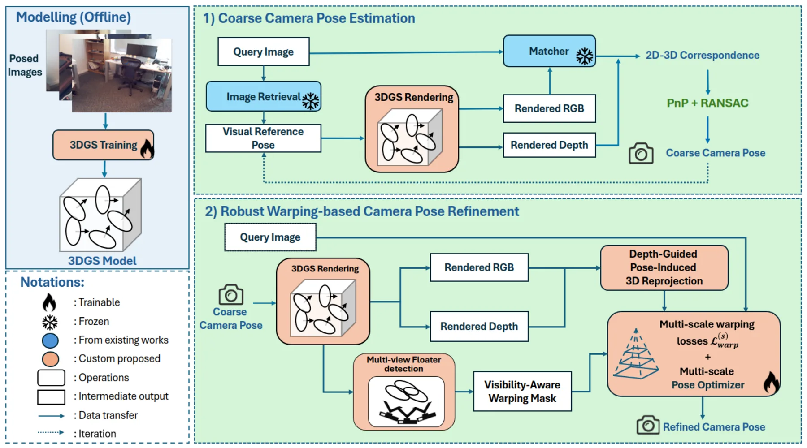
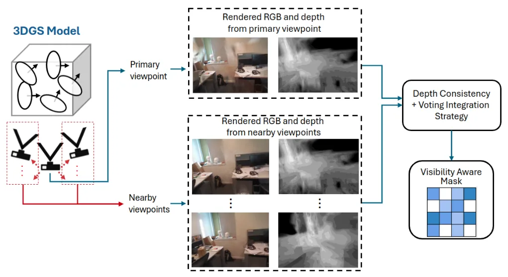
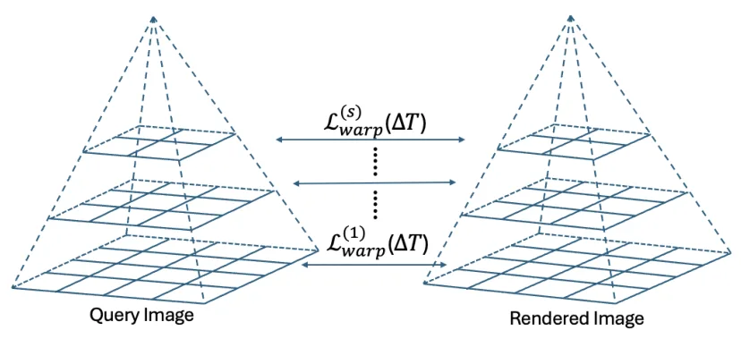
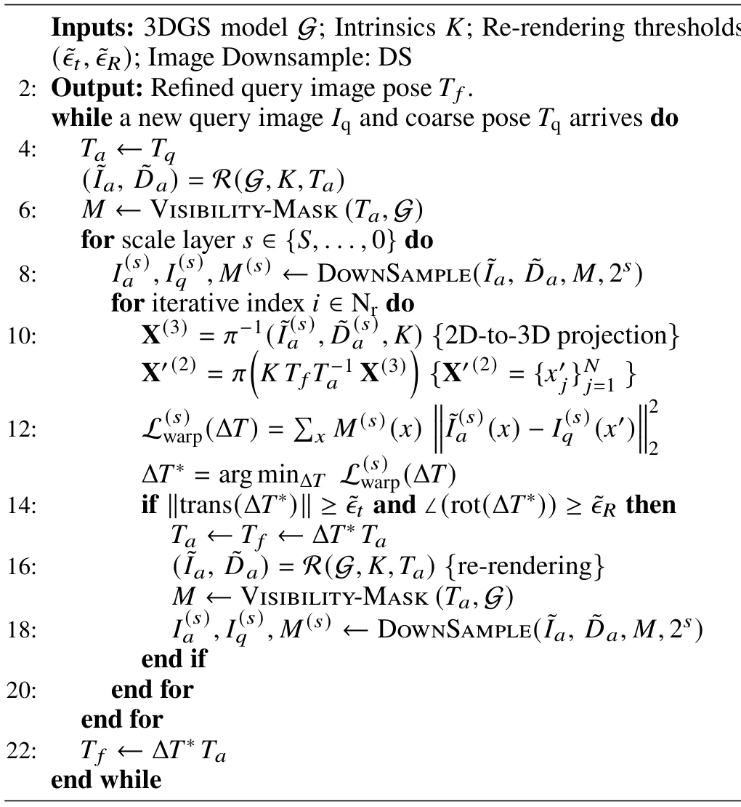
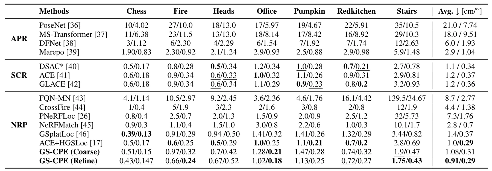
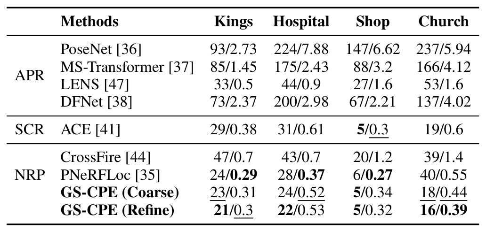
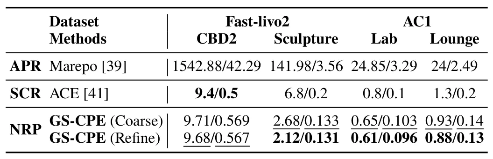
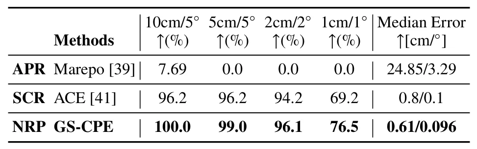
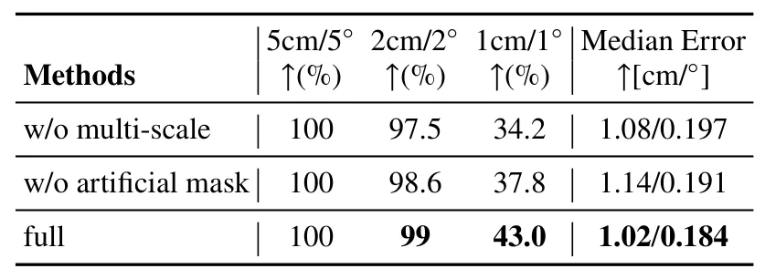

GS-CPE：基于 3D Gaussian Splatting 的统一六自由度相机位姿估计GS-CPE: Unified 6-Degree-of-Freedom Camera Pose Estimation via 3D Gaussian Splatting
直接面向六自由度相机重定位，几何初始化与 3DGS refinement 的组合兼顾泛化和精度；实时性、初始化失败域及遮挡处理仍需全文验证。
一句话工作总结
先以检索引导几何匹配获得可靠粗位姿，再通过 3DGS 可微渲染的可见性遮罩光度目标做多尺度细化。
摘要
GS-CPE 是一个由粗到细的六自由度相机位姿估计框架，将几何粗定位与基于 3D Gaussian Splatting warping 的位姿细化统一起来。系统先在 3DGS 场景表示上进行检索引导的几何位姿估计，再通过可见性感知的 masked RGB warping objective、多尺度优化和自适应重渲染细化结果。作者在 7Scenes、Cambridge Landmarks、FAST-LIVO2 与自建数据集上进行实验，并称其在精度和泛化方面达到 state of the art。
Despite substantial progress in visual localization, from scene coordinate regression to direct camera pose regression, achieving both robust generalization and high accuracy remain challenging. This study introduces GS-CPE (Gaussian Splatting based Camera Pose Estimation), a coarse-to-fine framework for 6-DoF camera pose estimation that unifies geometry-based coarse pose estimation with robust 3D Gaussian Splatting (3DGS) warping based pose refinement. GS-CPE first estimates a coarse pose via retrieval-guided geometric pose estimation on a 3DGS scene representation, then refines it by minimizing a visibility aware masked RGB warping objective in a multi-scale optimization framework, with adaptive re-rendering. Extensive experiments on indoor and outdoor benchmarks including 7Scenes, Cambridge Landmarks, FAST-LIVO2 datasets, and a custom dataset demonstrate state-of-the-art performance, consistently outperforming in both accuracy and generalization.
中文解读摘录
- 价值：把检索引导的几何粗定位与 3DGS 可微渲染细化统一起来，直接面向视觉重定位的精度与泛化矛盾。
- 方法与结果：先在 3DGS 场景表示上完成几何粗位姿估计，再以 visibility-aware masked RGB warping、多尺度优化、自适应重渲染细化位姿。摘要称在 7Scenes、Cambridge Landmarks、FAST-LIVO2 与自建数据上达到 state of the art。
- 关注点：优先核查初始化失败域、遮挡 mask 的构造、优化时延、与传统 feature-based localization 的公平性，以及 FAST-LIVO2 场景是否真正检验跨传感器泛化。
- 链接：arXiv · PDF
图表/页面预览

{kind=link}

{kind=link}

{kind=link}

{kind=link}

{kind=link}

{kind=link}

{kind=link}

{kind=link}

{kind=link}
